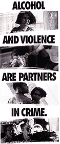

Alcohol-related Mortality
Many people die each year where alcohol is a contributory factor such as accidental falls, suicide, homicide and accidents.
There is also convincing evidence to show that regular alcohol consumption increases the risk of liver cirrhosis, cancers of the mouth, pharynx, larynx, oesophagus and liver.
A comparison of alcohol related mortality and alcohol consumption in Ireland over the last thirty years show increases in:
Cancers related to alcohol consumption
Cirrhosis and other conditions specifically related to alcohol - alcohol poisoning, alcohol psychosis, alcohol dependency
Toxic effect of alcohol
Alcohol abuse
During the last decade the increase in consumption mirrors the increases in cancers relating to alcohol and in particular alcohol poisoning and alcohol dependency.
Mental Health
Alcohol abuse is a significant risk factor in suicide and compounds the other factors in suicide.
There has been a sharp increase in male suicides especially among 15-29 age group and over.
Physical Symptoms:
- increasing tolerance of alcohol, i.e. being able to drink more without becoming drunk
- craving for drink
- needing a drink to function at work or in college
- memory gaps or blackouts
- stomach upsets, nausea, vomiting, diarrhoea
- shakes and tremors
- skin damage ? broken capilliries, coarseness
- poor personal hygiene, smelling of drink
- weight changes, gain as alcohol is high in calories, or loss through poor diet
- frequently hung-over
- fatigue and loss of motivation
- lack of cordination and awkwardness
- incontinance
- slurring of speech
- unable to perform sexually
Psychological Symptoms:
- preoccupied and thinking continously about drink
- irritable and argumentative
- projection of blame, ? it?s not my fault ?
- drowsiness and poor concentration
- depression, as alcohol is a central nervous system depressant
- anxiety suspicion paranoia
- hallucinations
- pathological jealously (sexual failure can lead to mistrust of partner)
- impaired judgement
- poor decision making
- reduced reaction time
- muddled or circular thinking
- toxic confusional states (alcohol is a poison)
- emotional incontinence ?inappropiate openness, tearful
- loss of self control and poor anger management
- declining self esteem and self worth
- feeling out of control
- emotionally unstable with dependant behaviour
- suicidal thinking and possible attempts
- guilt about drinking
- defensiveness on the topic of drink
- a developing sense of hopelessness
| 
|